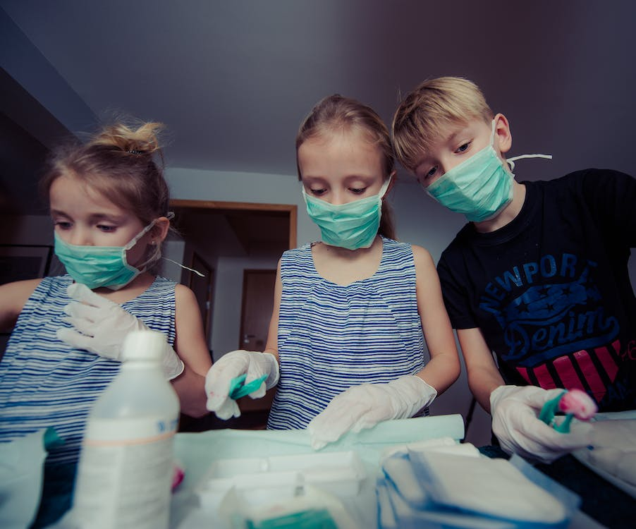

Be Prepared
When I have a fully stocked emergency kit, I tend to sleep a little better at night. My mind is at ease knowing I have a medical response for "most" accidents or injuries that can occur at home. These can have the following items: bandages, gauze, tape, antiseptics, antibiotics, sutures, scissors, pain relievers, anti-burn cream, latex gloves, masks, clean distilled water, blankets, matches, needle and syringe, flashlight, whistle, map, or hand radio. If you have any medications, it would be wise to include some extra doses if anything happens. For example, if you're diabetic, try to have extra insulin available.
In my house, every person has a 48-hour bag available. This can include extra clothes, food (but no perishables), money, medicine, a toothbrush, family photo, flashlight, medical kit, and instructions on where to go and what to do should an emergency force us to flee from our home. We discuss beforehand where to go if we should happen to get separated. It's better to prepare and talk about your options to avoid potential chaos. What do you have in your emergency kit? The Church of Jesus Christ of Latter-Day Saints suggests three things when prepaing emergency supplies: First, start by taking an inventory—take a physical count of all of your reserves. Second, decide what is needed to bring your present reserve levels to a year's supply. Third, work out a time schedule for when you will reach your goal.
